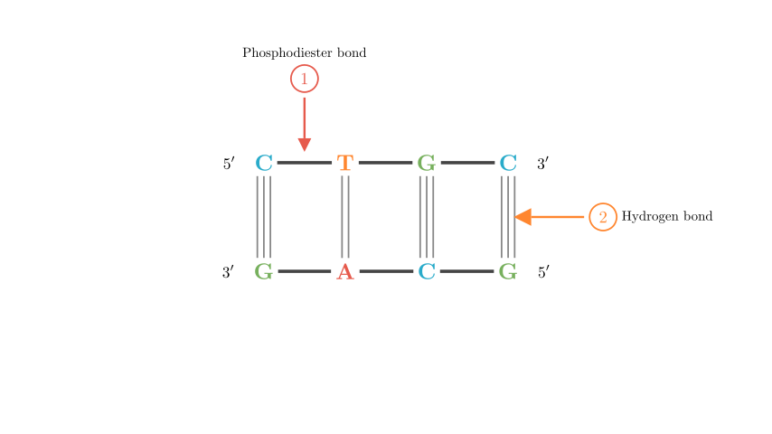
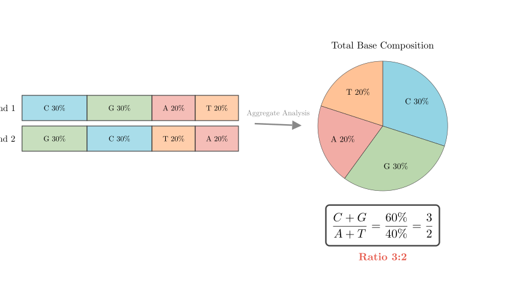
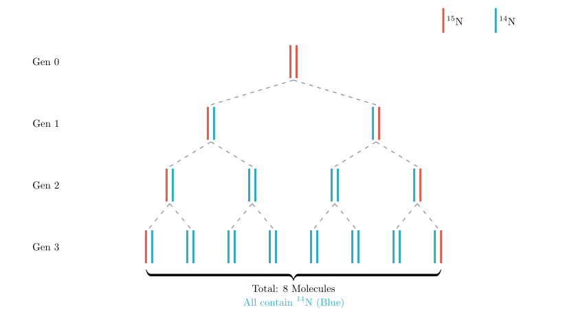

As shown in the figure, a schematic represents the structure of a certain gene (labeled with \(^{15}\)N) in a eukaryotic cell. In this gene, Cytosine (C) accounts for 30% of all bases. Which of the following statements is correct?
We will analyze the DNA structure shown in the diagram to identify the chemical bonds at sites ① and ②. Then, we will apply Chargaff's rules to calculate base ratios for statement B. Finally, we will use the principles of semi-conservative replication to evaluate the outcomes of mutation (statement C) and isotope labeling (statement D).

Step 1: Analyzing Enzyme Action Sites (Option A)Let's identify the structures labeled in the diagram:
Helicase is an enzyme involved in DNA replication that "unzips" the double helix. It does this by breaking the hydrogen bonds between base pairs to separate the strands. Therefore, helicase acts on site ②.
Enzymes that act on site ① (phosphodiester bonds) include restriction enzymes (which cut DNA) and DNA ligase (which joins DNA).
*Conclusion:* Statement A claims helicase acts on both ① and ②, which is incorrect.

Step 2: Calculating Base Ratios (Option B)We are given that Cytosine (C) accounts for 30% of the total bases in the gene.
According to base-pairing rules (Chargaff's rules):
1. Since \(C = 30\%\), then \(G = 30\%\). 2. The sum of C and G is \(30\% + 30\% = 60\%\). 3. The remaining bases are A and T. Total bases = 100%. \(A + T = 100\% - (C + G) = 100\% - 60\% = 40\%\). 4. Since \(A = T\), then \(A = 20\%\) and \(T = 20\%\).
The ratio of (C + G) to (A + T) for the entire DNA molecule is: \[ \frac{C+G}{A+T} = \frac{60\%}{40\%} = \frac{3}{2} \]
Because of complementary base pairing, the number of \((C+G)\) on one strand corresponds to the number of \((G+C)\) on the complementary strand. Similarly, \((A+T)\) on one strand corresponds to \((T+A)\) on the other. Therefore, the ratio \(\frac{C+G}{A+T}\) is constant for both the double strand and each individual single strand.
*Conclusion:* Statement B states the ratio is 3:2, which is correct.

Step 3: Analyzing Replication with Isotopes (Option D)The gene is initially labeled with \(^{15}\)N (both strands). It replicates 3 times in a medium containing \(^{14}\)N.
The question asks for the proportion of DNA molecules containing \(^{14}\)N.
Statement D claims this proportion is 3/4 (which would be the proportion of molecules containing *only* \(^{14}\)N). Therefore, Statement D is incorrect.
Step 4: Analyzing Mutation (Option C)If the base T at site ① changes to A, we have a point mutation on one strand.
1. The mutated strand (A) serves as a template and pairs with T, creating a mutant gene (A-T pair). 2. The original complementary strand serves as a template and creates the original gene sequence.
Statement C claims the altered gene accounts for 1/4. This is incorrect; it should be 1/2.
Final Conclusion